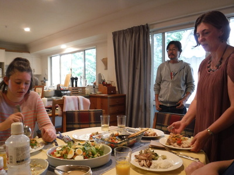
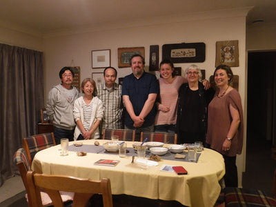

釣行日誌 ＮＺ編 「一期一会の旅：A Sentimental Journey」
ヘザーさんとの再会
11/28(WED)-1
今朝はゆっくりと起きた。今日は釣りはオフとして、１日ゆっくり休養に充てるつもりだ。何と言っても大林さん宅にて夕方６時から、ワイカト大学に入学してハミルトンに移った時の最初のホストマザーであるヘザー・メイジャーさんや娘さんのレイチェルさんたちとの夕食会がセットされているのだ。
セルフサービスでトーストと蜂蜜、ホットミルクの朝食をいただき、洗濯に取りかかる。大型のドラム式洗濯機に衣類を入れてスイッチを押した。続いてウェストランド釣行では２日目から水がダダ漏れだったウェーダーを点検してみる。ご主人に聞くと、ガレージ脇に水道があるそうなので、ウェーダーを部屋から持ち出して、水道の蛇口から水を入れてみる。すると、ピンホールからの水漏れというより、主な縫い目の至る所から水滴がボトボトと浸み出てくる。
『こりゃアカンわ！』
ダイワが販売しているウェーダー補修剤と紫外線硬化型の補修剤の２種を持参したのだが、とても応急処置は出来そうも無い。まぁ、ハミルトン近郊の釣りならば、水の冷たささえ我慢すれば全てウェットウェーディング、いわゆるキウィ・スタイルで間に合うので、修理は帰国後に行うことにした。ウェーダーを逆さまにして水を出し、物干し場に掛けて干しておいた。
朝食をとっていた大林さんと一緒にコーヒーを頂きながら、昔話を楽しみ、ハミルトンも大きな都市になったものですねぇと感想を述べる。まぁ、僕が住んでいたのはかれこれ20年近くも前の話なのだから無理も無い。市街地が拡大し、道路が立派になったのには驚かされた。昔は中央分離帯のある２車線道路なんてほとんど無かったのに。ティーンエージャーだったご夫妻のお子さんたちも独り立ちして家を出て行かれたそうだ。
デジカメの写真を再生して情景を思い出しつつ、釣行結果をメモに残す。
昼食をいただいたあとは、また近所のショッピングモールに出かけ、本屋などをブラついて郵便局の窓口を見つけたので、先日渡すのを忘れてしまったオークランドのジョーさんへのお土産、猫ちゃんのカレンダーを送付した。本屋の棚にはイギリスの DK という出版社の飛び出す恐竜の絵本があったので、グループホームのお世話人さんの息子さんたちのお土産にと買い込んだ。今日の午後はつかの間の休暇？を楽しんだ。
夕方になり、賑やかな声とともにヘザーさん一行が到着した。ヘザーさん、娘さんのレイチェルさん、ヘザーさんの義理のお母さんであるバーバラさん、義理の弟さんのトロイさんである。今夜はニュージーランドではおなじみの「ポットラック」式の夕食と言うことで、皆がそれぞれ料理を１品持参して、テーブルはたちまち賑やかになった。
そもそもなぜ僕がヘザーさんの家にステイすることになったかというと、当時のワイカト大学の留学生支援センターでホームステイ先を探したところ、候補家庭リストの１番下に、「日本人留学生希望」と書かれた１軒の連絡先が載っていた。
「こりゃいいや！」
ということでさっそく電話をかけてみると、そこがヘザーさんの家だったのである。当時は旦那さんのグレンさんも元気で、大学の体育館にバスケットボールを見に連れて行ってくれたりした。その後、グレンさんは難病を患い、長年の闘病生活の後、10年ほど前に亡くなられたのであった。グレンさん亡き後、ヘザーさんは女手一つでレイチェルさんを育て上げ、今は立派に高校１年生となられたのである。敬虔なクリスチャンであるヘザーさんたちは、同じくクリスチャンの大林さん夫妻とも親しく、当時は約30人ほどのハミルトン日本人会のような集まりに参加していたのだ。
ヘザーさんの家で半年ほど暮らした後、メイジャー夫妻は福井市に行くことになり、僕はまたジョー・ソールさんという方のホストファミリーの家に移り住んだのだが、それはまた後に述べることとする。
ポットラックディナーの品々は、チキンと野菜の炒め物、白米、コールスロー、野菜サラダ、などなど。約20年ぶりの再会で皆話が弾んだ。

レイチェルさんはお父さんに似てサッカーが好きで、しかもとても上手であり、ニュージーランドのナショナルチーム（U17だったか？）に選ばれるかもしれないということだった。今は高校の試験前で勉強が大変だとこぼしていた。僕よりも背が高くて驚いた。（笑）
よく笑う話し好きのバーバラさんの夫、つまりヘザーさんの義理のお父さんであるボブさんは、定年後はボランティアで、
ニュージーランド自然保護局：Department of Conservation
の仕事をしていた。ある日僕が、DｏCが整備している散策道が川沿いに流れている山岳渓流を釣った帰り道に、ばったりボブさんに出会ったことがあった。彼は散策道の標識の整備をしてきたと言うことで、がっしりとした背中に重そうなリュックを背負っていた姿が想い出された。その時のことをバーバラさんに話すと、
「まぁ、よく覚えていてくれたわねぇ！」
と、喜んでくれた。そのボブさんも、グレンさんと同じ年の秋に亡くなられたそうで、とても残念だった。
グレンさんの弟さんであるトロイさんは、イラストを描くソフトウェアを使い、いろんな店の看板やロゴデザインを創る仕事をしており、僕が釣り好きだと知ると、友達に腕の良いフィッシングガイドがいるから紹介してあげようと言い、メモにその方の名前を書いてくれた。Rob Vazという名前のそのガイドさんのことは、何かの雑誌かウェブの記事で目にしたことがあるような気がした。帰国後調べてみると、ワイカト・ロトルア地方を守備範囲とするフィッシングガイドのようであった。
僕があと１週間ほどハミルトンに滞在する予定であることを知ると、トロイさんは、ガイドの空きがあるかどうか、ロブ・バッツさんに電話して聞いてみてあげると言ってくれた。
トロイさんは自分の作品の画像をたくさんスマホに入れており、いくつかを見せていただいたが、現代的なロゴやモノクロで描かれた黒馬の素描が見事で唸らされた。彼は最近木工仕事にも興味が湧いてきたそうで、同じく家具づくりが趣味の大林さんとも一緒に製作活動をすることもあるそうで、２人は木工の話で盛り上がっていた。
楽しかった夕食会もあっという間に時間が過ぎ、最後に皆で記念写真を撮してお開きとなった。

釣行日誌ＮＺ編 目次へ
サイトマップ
ホームへ
お問い合わせ